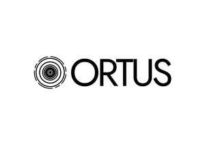

Trade Mark Journal No.2025/024 13 June 2025
UK00004209608 27 May 2025 (8,21)

- Class 8
- Hand tools and implements, hand-operated; Cutlery; Side arms, except firearms; Razors; Tweezers; Hand tools, hand-operated; Razor strops [leather strops]; Sharpening steels; Whetstones [sharpening stones]; Egg slicers, non-electric; Non-electric planes for flaking dried bonito blocks (katsuo-bushi planes); Can openers, non-electric; Spoons; Cheese slicers, non-electric; Pizza cutters, non-electric; Tableware [knives, forks and spoons]; Table forks; Shaving cases; Pedicure sets; Eyelash curlers; Manicure sets; Spatulas [hand tools]; Knives; Kitchen knives; Scissors; Scissors for kitchen use; Hand-operated slicers; Knife sharpeners; Razor blades; Scrapers [hand tools]; Scissor sharpeners (Hand operated -); Non-electric vegetable peelers; Non-electric fruit peelers; Blade sharpening instruments; Ladles [hand tools]; Apple corers; Baby spoons, table forks and table knives; Biodegradable cutlery; Bread knives; Butter knives; Cake cutters; Chef knives; Coffee spoons; Knife bags; Non-electric garlic cutters; Non-electric garlic choppers; Oyster openers; Shrimp deveiners; Vegetable slicers.
- Class 21
- Household or kitchen containers; Household or kitchen utensils; Cookware and tableware, except forks, knives and spoons; Sponges; Combs; Brushes, except paintbrushes; Brush-making materials; Articles for cleaning purposes; Unworked or semi-worked glass, except building glass; Earthenware; Porcelain; Glassware; Kitchen containers; Containers for household use; Soap containers; Heat insulated containers; Kitchen utensils; Knife rests; Mugs; Hand-operated pepper mills; Hand-operated spice mills; Salt mills; Salt and pepper shakers; Pestles for kitchen use; Pot lids; Scoops for household purposes; Coffee scoops; Ice cream scoops; Scrubbing brushes; Serving spoons; Mixing spoons; Strainers for household purposes; Cooking strainers; Table napkin holders; Tablemats, not of paper or textile; Trays for household purposes; Utensils for household purposes; Towel rails and rings; Toothpick holders; Toothpicks; Automatic opening and closing trash cans for household purposes; Baskets for household purposes; Bread baskets for household purposes; Basting spoons, for kitchen use; Bottle openers; Vacuum bottles; Corkscrews; Bowls; Salad bowls; Dishwashing brushes; Toilet brushes; Cutting boards for the kitchen; Clothing stretchers; Coasters, not of paper or textile; Cruets; Dish covers; Bread bins; Waste bins for household use; Egg cups; Frying pans [non-electric]; Funnels; Graters for kitchen use; Pots; Buckets; Ice buckets; Ice tongs; Barbecue tongs; Soap dispensing bottles; Soap holders; Sponge holders; Sponges for household purposes; Steel wool for cleaning; Toilet paper holders; Cloths for cleaning; Zesters; Whisks, non-electric, for household purposes; Blenders, non-electric, for household purposes; Cake moulds; Cookery moulds; Moulds [kitchen utensils]; Cooking skewers; Kettles, non-electric; Jars.
EBONY HOUSEHOLD LIMITED
Representative: TONG KA MAN